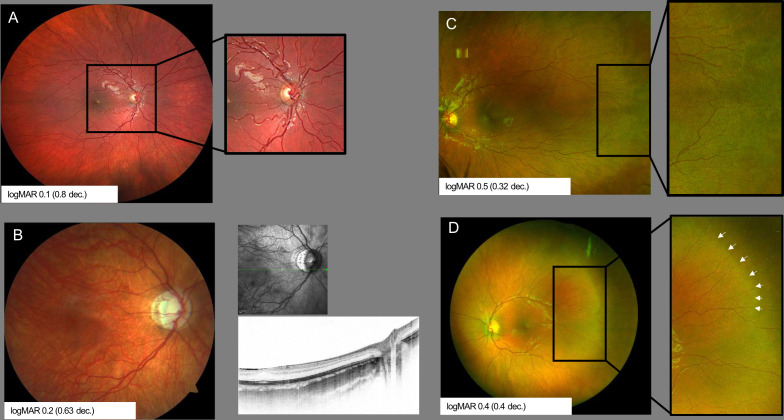
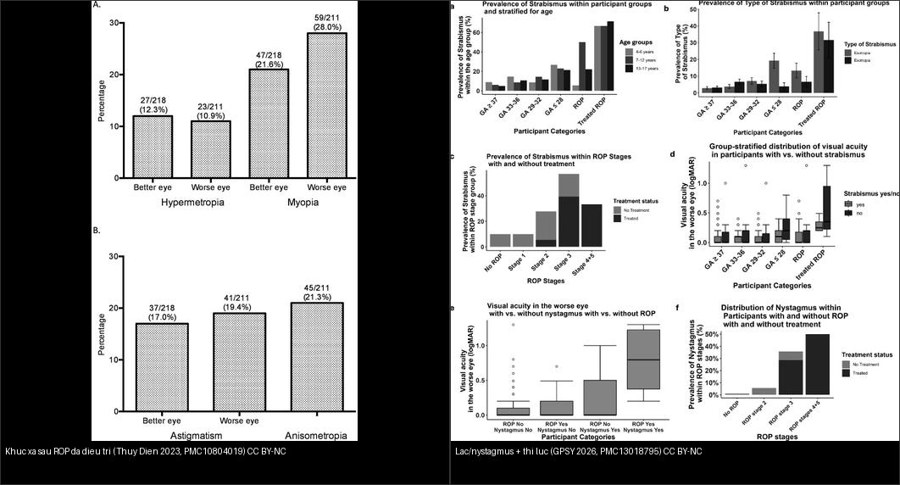
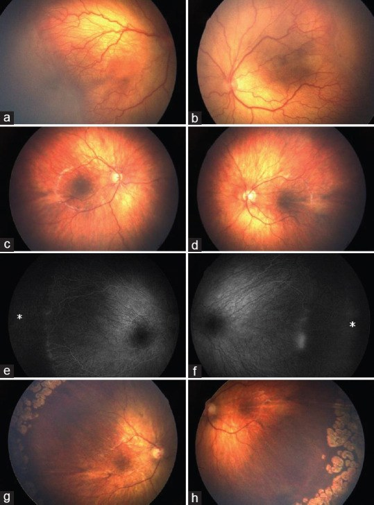
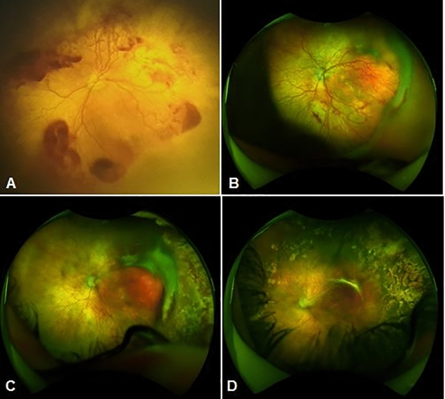
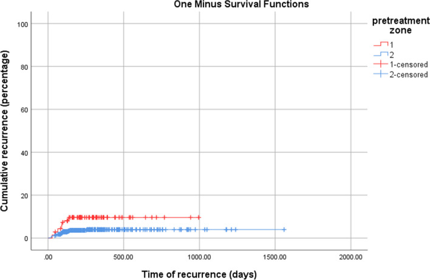
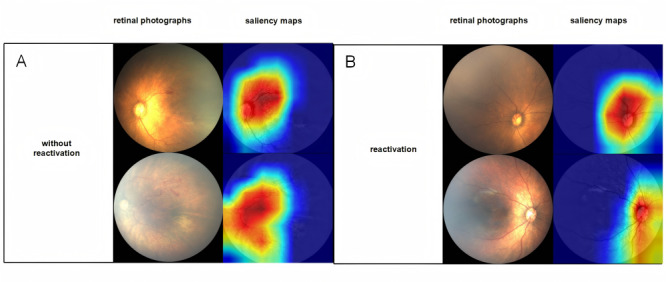
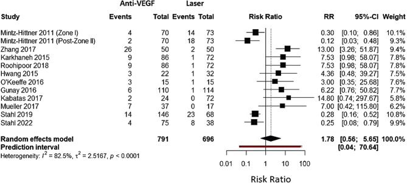
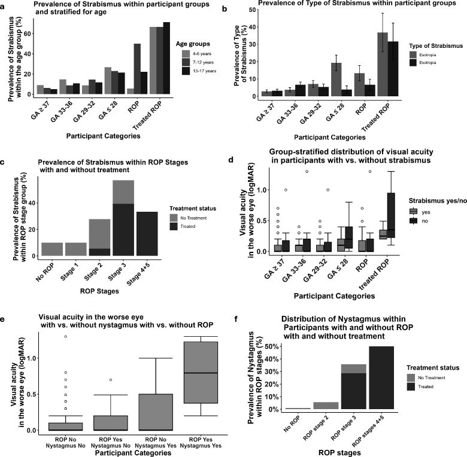
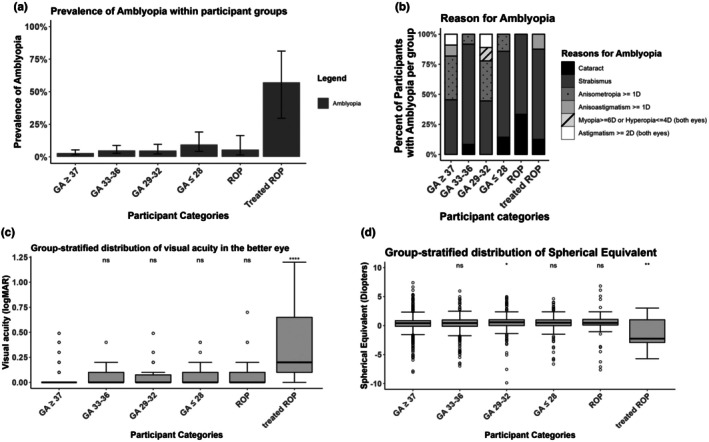

458 — Di chứng & theo dõi dài hạn sau ROP: tái hoạt sau anti-VEGF, cận thị/lác/nhược thị & khúc xạ / Long-term sequelae & follow-up after ROP
Tags: pattern:di-chung-rop pattern:tai-hoat-rop vung:vong-mac score:ICROP protocol:theo-doi-sau-rop
Mức chắc chắn (certainty): tổng hợp y văn (literature synthesis) — nhóm tự biên từ y văn mở (Sci Rep 2026 CC BY-NC-ND; BMJ Open Ophthalmol 2025 CC BY-NC; Int J Retina Vitreous 2022/2026 CC BY; Br J Ophthalmol 2023/2026 CC BY-NC; Acta Ophthalmol 2025 CC BY; J Med Internet Res 2025 CC BY; Saudi J Ophthalmol 2022 CC BY-NC-SA).
1. Tổng quan — bệnh KHÔNG kết thúc ở tuần 40: hai con đường gây mù muộn
- Nguyên lý (pathology): ROP (retinopathy of prematurity) là bệnh của mạch máu võng mạc chưa mọc hết (bài 456). Dù đa số thoái triển, cả bệnh lẫn điều trị đều để lại dấu vết suốt đời, theo hai cơ chế khác nhau — vì vậy phải theo dõi lâu dài, không dừng khi qua tuần 40:
- Đường XƠ CỐ ĐỊNH (cicatricial): tân mạch → xơ → co kéo đĩa thị/bó mạch/võng mạc (macular dragging), để lại cận thị nặng, loạn thị, lác; có thể bong võng mạc co kéo (TRD) muộn ở tuổi học đường.
- Đường TÁI HOẠT sau anti-VEGF (reactivation): thuốc ức chế VEGF tạm thời — vùng võng mạc vô mạch vẫn còn, mạch ngoại vi có thể không bao giờ mọc hết → bệnh tái hoạt muộn (gờ tái xuất/plus tái xuất) → bong võng mạc muộn (crunch syndrome).
- TẠI SAO laser và anti-VEGF để lại di chứng KHÁC nhau (cơ chế):
- Laser quang đông: đốt cháy vùng vô mạch nhưng phá hủy mô + viêm quanh hoàng điểm, ảnh hưởng sự phát triển trục nhãn → cận thị cao + loạn thị nhiều hơn (đáy mắt xơ co kéo do co kéo trực tiếp).
- Anti-VEGF: ít phá mô → ít cận thị hơn, nhưng mạch ngoại vi mọc chậm/ngừng → tái hoạt muộn đòi hỏi theo dõi dài hơn; OCT cho thấy thể vàng mất lõm (macular hypoplasia) do hoàng điểm chưa trưởng thành.
- Ngưỡng định lượng nằm lòng:
- Di chứng đáy mắt muộn (CARE-ROP 5 năm, ranibizumab): 17/28 mắt (60,7%) có ≥ 1 bất thường đáy mắt (nhợt/teo đĩa thị, đổi sắc tố RPE, vằn mạch tồn dư persistent tortuosity, thiểu sản hoàng điểm); 19/26 mắt đạt BCVA ≤ 0,3 logMAR (thị lực tốt); khúc xạ trung bình −0,9 D (SD ± 3,4 D) — cận thị cao chỉ ở 2 mắt của 1 trẻ.
- Tái hoạt/tái điều trị (Akıdan, 550 mắt/284 trẻ): tiêm mũi đầu 99,8%, tái điều trị 9,6% (lúc 35–60 tuần); laser bổ sung 15,8%; bong võng mạc 1,8% (xuất hiện 38–120 tuần, mắt bong được tiêm sớm hơn có ý nghĩa) → tái hoạt/bong là biến cố của nửa cuối năm đầu, không phải vài tuần đầu.
- So anti-VEGF vs laser (meta-analysis 15 nghiên cứu/1784 mắt): tái phát RR 1,78 (95% CI 0,56–5,65) và tái điều trị RR 1,80 (0,54–5,94) — không khác biệt có ý nghĩa; nhưng phân nhóm: zone I tái phát THẤP hơn với anti-VEGF (RR 0,52) còn zone II tái phát CAO hơn (RR 3,42); ranibizumab tái phát nhiều hơn; tái phát xảy ra 7 đến > 50 tuần sau điều trị (độ biến thiên lớn).
- Di chứng chức năng (GPSY, 949 trẻ): lác — đủ tháng 6%, non không ROP 10–23% (tùy tuổi thai), ROP điều trị 68%; nystagmus: đủ tháng 0,8% → ROP điều trị 47%; nhược thị liên quan tuổi thai ≤ 28 tuần (OR 2,92), suy nhau thai (OR 3,84), điều trị ROP (OR 15,71); lác liên quan loạn thị (OR 2,48) và viễn thị (OR 2,09).
- Di chứng khúc xạ (Thụy Điển 6,5 tuổi, trẻ ROP đã điều trị): cận thị 21,6% mắt tốt – 28,0% mắt xấu (28% ở mắt xấu), loạn thị 17,0–19,4%, anisometropia (lệch khúc xạ hai mắt) 21,3% — đây là ổ nhược thị cần bắt sớm.

(A) vằn xoắn mạch cực sau tồn dư; (B) nhợt/teo đĩa thị kèm OCT; (C) vùng võng mạc vô mạch tồn dư (chưa mọc hết); (D) tàn dư gờ cũ (mũi tên trắng). Đây là các dấu hiệu "ổn định" cần phân biệt với tái hoạt tiến triển. Nguồn: Stahl A et al., BMJ Open Ophthalmol 2025, PMC12382488 Fig. 2, CC BY-NC 4.0.2. Mẫu hình + chẩn đoán phân biệt theo DÒNG THỜI GIAN (gamut theo tuổi)
Di chứng sau ROP đọc theo mốc tuổi — mỗi giai đoạn có chân dung riêng:
- Pha 1 — trong/ngay sau điều trị (0–6 tháng tuổi thực): tái hoạt (reactivation). Gờ tái xuất hoặc bồi thêm, plus tái xuất ở mạch cực sau, vùng vô mạch chưa mọc hết. Chốt bằng chuỗi ảnh (so lần chụp trước–sau), KHÔNG bằng một lần nhìn. Vì sao chụp lại mới thấy: tái hoạt là thay đổi theo thời gian (mạch vằn tăng dần) — ảnh đơn độc không phân biệt được trạng thái ổn định với đang tiến triển.
- Pha 2 — tuổi học đường (4–12 tuổi): khúc xạ – lác – nhược thị – đáy mắt cố định. Cận thị/lệch khúc xạ, lác (đặc biệt esotropia), nystagmus, macular dragging, nếp võng mạc (retinal fold); đáy mắt xơ co kéo CỐ ĐỊNH (không đổi theo thời gian).
- Pha 3 — vị thành niên/người lớn: biến chứng muộn nặng. Bong võng mạc muộn (co kéo TRD, rách RRD ở vùng teo/lỗ hoàng điểm do co kéo, hoặc tiết dịch), glaucoma góc đóng (nhãn cầu nhỏ + mống mắt-phôi dịch kính dày), cataract, xuất huyết dịch kính, võng mạc thoái hóa lỗ hoàng điểm.
- Chân dung di chứng xơ cố định (cicatricial ROP) — theo mức: từ nhẹ (mạch thẳng bất thường, kéo nhẹ đĩa), vừa (macular dragging/dị thường hoàng điểm), đến nặng (nếp võng mạc kiểu "thắt lưng" — falciform fold, khối xơ, bong võng mạc có thể tự khỏi thành dính).
- Mnemonic "3R muộn" (theo dõi 3R): Refraction (khúc xạ), Retina (đáy mắt — co kéo/bong/cataract/glaucoma), Relation-alignment (lác/nystagmus).
- Đối chiếu hai ngả điều trị (gamut theo cách xử trí):
- Laser đã làm → nghiêng về cận thị cao + loạn thị + màng cận hoàng điểm; tái hoạt hiếm sau khi mạch mọc hết (vùng vô mạch đã đốt).
- Anti-VEGF đã tiêm → nghiêng về khúc xạ trung tính hơn, NHƯNG vùng vô mạch còn lại → tái hoạt muộn và cần theo dõi dài hơn (quan trọng với zone I).

Trái: cận thị/viễn thị/loạn thị/anisometropia ở trẻ ROP đã điều trị (6,5 tuổi, Thụy Điển 2023). Phải: lác/nystagmus tăng vọt ở nhóm ROP đã điều trị (GPSY 2026) — lác ~68% và nystagmus ~47% so với đủ tháng 6%/0,8%. Nguồn: Larsson E et al., Br J Ophthalmol 2023, PMC10804019 Fig. 2 CC BY-NC 4.0 & Fieß A et al., Br J Ophthalmol 2026, PMC13018795 Fig. 2 CC BY-NC 4.0 (ảnh ghép letterbox).3. Bảng so sánh phân biệt (ma trận đối chiếu)
| Thực thể (entity) | Hình ảnh điển hình | Chốt vào (rule-in) | Chốt loại (rule-out) | Gợi ý xác nhận |
|---|---|---|---|---|
| Tái hoạt sau anti-VEGF | Gờ tái xuất/bồi thêm, plus tái xuất, mạch cực sau vằn tăng dần; vô mạch chưa mọc hết | So chuỗi ảnh thấy TIẾN TRIỂN + plus mới/vằn tăng; xuất hiện ~4–16 tuần sau mũi, có ca tới 50+ tuần | Mạch đã mọc hết zone III + không đổi qua các lần chụp → di chứng ổn định, không phải tái hoạt | Ảnh đáy mắt góc rộng (UWF) chuỗi; theo dõi ≥ 65 tuần PMA |
| Di chứng xơ cố định (cicatricial) | Đĩa thị/bó mạch kéo lệch (dragged disc), mạch thẳng bất thường, nếp võng mạc, macular dragging | Đĩa thị kéo về thái dương, mạch kéo thẳng thành "nan hoa"; bất biến/nhích không đổi giữa các lần | Thay đổi tiến triển theo thời gian (+ plus mới) → tái hoạt, không phải di chứng | So ảnh cũ; OCT (mất lõm hoàng điểm) |
| Bong võng mạc muộn (TRD/RRD) | Đám trắng đục/màng co kéo, "crunch syndrome" vùng cực sau; hoặc bong do rách vs tiết dịch | Co kéo + bong võng mạc có tính TIẾN TRIỂN; mờ dịch kính | Bong ổn định kiểu dính sẹo cũ → mô tả di chứng, cân nhắc theo dõi | Siêu âm B-scan khi mờ môi trường; so ảnh |
| Cận thị/loạn thị + anisometropia | Nhãn cầu dài (myopia), lệch khúc xạ hai mắt | SE âm tăng dần + loạn thị; anisometropia 21,3% | Đồng đều hai mắt, không lệch → ít nguy cơ nhược thị | Khúc xạ liệt điều tiết (cycloplegic refraction) định kỳ |
| Lác/nystagmus | Mắt lệch (esotropia), nystagmus | ROP đã điều trị + lác sớm (esotropia lúc nhũ nhi ~70%) | Lác đơn thuần < 6 tháng tuổi chưa loại trừ ROP → phải khám đáy mắt | Khám chỉnh thị + khúc xạ; va kính lăng kính |
| Glaucoma góc đóng muộn / cataract | Nhãn cầu nhỏ, góc tiền phòng hẹp; đục thể thủy tinh | Nhãn cầu nhỏ + tiền phòng nông + nhãn áp tăng (glaucoma góc đóng ở người lớn trẻ) | Nhãn áp bình thường, tiền phòng sâu → loại trừ | Nhãn áp, soi góc (gonioscopy), siêu âm sinh trắc (AL) |

Ca minh hoạ (trẻ sinh 22+5 tuần, 542 g, tiêm aflibercept hai mắt cho A-ROP): tàn dư vùng vô mạch/mạch bất thường (a–d), rối loạn tưới máu trên FA (e–f), và các vết laser quanh chu biên (g–h) — minh hoạ rằng di chứng vẫn hiện diện nhiều năm sau điều trị. Nguồn: Özdemir HB, Özdek S, Saudi J Ophthalmol 2022, PMC9583352 Fig. 2, CC BY-NC-SA 4.0 (nguyên bản, không cắt ghép).4. Protocol: lịch theo dõi dài hạn + ngưỡng hành động
- Kết thúc sàng lọc ROP, KHÔNG kết thúc theo dõi: sau khi mạch đã mọc hết tới zone III, cả trẻ ROP đã điều trị lẫn ROP không điều trị đều cần khám mắt định kỳ (theo 456). Trẻ điều trị anti-VEGF phải theo dõi tới ≥ 65 tuần PMA (chú ý cửa sổ nguy cơ 45–55 tuần PMA) vì tái hoạt muộn.
- Theo dõi tái hoạt (ngay sau điều trị): ảnh đáy mắt góc rộng mỗi 1–2 tuần tuỳ zone tới khi ổn định; bất kỳ plus mới + gờ tái xuất → soi kỹ, cân nhắc tiêm lại ± laser bổ sung. Thời điểm tái hoạt thường ~150 ngày nhưng trải rộng 7 đến > 50 tuần.
- Theo dõi dài hạn theo tuổi:
- Nhũ nhi — tuổi học đường: đo khúc xạ liệt điều tiết + khám chỉnh thị (alignment) + nhược thị; theo dõi lác/nystagmus; đo AL (axial length) khi cận thị tiến triển.
- Đo OCT hoàng điểm khi nghi thiểu sản/di chứng hoàng điểm.
- Tầm soát biến chứng muộn (vị thành niên/người lớn): nhãn áp + soi góc (glaucoma góc đóng), soi đáy mắt tìm bong võng mạc/lỗ, kiểm tra thể thủy tinh.
- Ngưỡng/hành động chốt:
- RETREATMENT khi tái hoạt: gờ tái xuất + plus, đặc biệt zone I (nguy cơ tái phát ~2× zone II) → tiêm lại; sau đó tiếp tục theo dõi dài hạn.
- Bong võng mạc stage 4–5: scleral buckle hoặc cắt dịch kính (ưu tiên lens-sparing) — xử trí cấp.
- Lác/nhược thị: đeo kính chỉnh khúc xạ + bịt mắt (occlusion)/atropine sớm trước tuổi học để tối ưu thị lực; báo cửa sổ vàng của nhược thị (thường < 7–8 tuổi).
- Chẩn đoán hình ảnh: ưu thế ảnh đáy mắt màu góc rộng (RetCam/UWF, điện thoại có đèn); siêu âm B-scan khi mờ môi trường; OCT cho hoàng điểm/RNFL; máy học đa phương thức (multimodal ML) đang hỗ trợ dự báo tái hoạt (AUC ~0,82 ở mô hình kết hợp) — chưa thay thế lâm sàng.
flowchart TD
A["ROP da dieu tri (laser hoac anti-VEGF)"] --> B{Mach da moc het zone III ?}
B -->|Chua / tren anti-VEGF| C[Theo doi tich cuc: anh UWF moi 1-2 tuan; anti-VEGF toi >= 65 tuan PMA, cang 45-55 tuan]
C --> D{Go tai xuat + plus moi tren CHUOI anh ?}
D -->|Co = tai hoat| E[Tiem lai anti-VEGF +- laser bo sung]
D -->|Khong| F[Di chung on dinh]
B -->|Da moc het, da on dinh| F
F --> G[Theo doi dai han theo tuoi: khu xa liet dieu tiet + chinh thi + nhuoc thi]
G --> H{Lac / nystagmus / nhuoc thi / can thi ?}
H -->|Co| I[Kinh chinh + bit mat/atropine som; theo doi AL]
H -->|Khong| J[Tiep tuc kham dinh ky]
E --> G
G --> K[Tam soat bien chung muon: nhan ap + soi goc + day mat tim bong/lac]
K --> L{Bong VM muon hoac glaucoma goc dong?}
L -->|Bong| M[Dai cung mac / cat dich kinh cap]
L -->|Glaucoma/cataract| N[Xu tri chuyen khoa]
5. Biến thể bình thường và cạm bẫy
- Cạm bẫy số 1 — "trông ổn" ≠ an toàn: mạch vằn tồn dư (persistent tortuosity) và mất lõm hoàng điểm là di chứng ổn định, KHÁC với tái hoạt tiến triển. Chốt phân biệt = chuỗi ảnh, không phải một lần nhìn. Bỏ theo dõi quá sớm sau anti-VEGF là cạm bẫy chết người (bong võng mạc muộn tới 50+ tuần).
- Cạm bẫy số 2 — đọc tái hoạt khi mạch chỉ mới mọc: vùng vô mạch bình thường vẫn còn khi mạch đang mọc dần; chỉ gọi tái hoạt khi có gờ/plus mới so với lần trước. Ghi nhãn ảnh theo ngày và lưu ảnh gốc.
- Cạm bẫy số 3 — lác/nhược thị bị bỏ qua: phụ huynh thấy lác mới đi khám (thường đã có leukocoria/co kéo nặng). Trẻ non phải được khám khúc xạ liệt điều tiết + chỉnh thị, không chờ triệu chứng. Anisometropia 21,3% âm thầm gây nhược thị.
- Cạm bẫy số 4 — "ROP nhẹ thì không sao": ngay ROP không điều trị vẫn có thể có cận thị/lác/nystagmus (nystagmus 5% ở nhóm non ≤ 32 tuần có ROP không điều trị, so với 0,8% trẻ đủ tháng) → mọi trẻ non tháng cần theo dõi.
- Cạm bẫy số 5 — glaucoma góc đóng: nhãn cầu nhỏ (microphthalmos) sau ROP + tiền phòng nông → glaucoma góc đóng muộn; không chỉ để ý đáy mắt mà phải đo nhãn áp + soi góc.
- Cạm bẫy số 6 — tưởng laser đã "đốt sạch bệnh": sau laser vẫn có thể bong võng mạc muộn (TRD/RRD) và màng trước võng mạc; theo dõi suốt đời.
- Biến thể bình thường dễ nhầm (từ bài 456): gờ giả vùng zone III; mạch thái dương chéo bình thường; nếp võng mạc bẩm sinh ở trẻ đủ tháng (bài 457). Luôn xác nhận tiền sử sinh non.
6. Tự lượng giá — Blind Quiz
Ca 1 — Trẻ non tháng, sau tiêm anti-VEGF đã thoái triển; chụp lại thấy trung tâm có tổn thương vàng cam vùng hoàng điểm. Nhìn chuỗi A→D, mô tả trước:

- Gợi ý lâm sàng: ROP type 1 mắt trái, tiêm ranibizumab mũi 1, sau đó là mũi 2 + laser.
- Hỏi: A→B có gì thay đổi? C và D nói lên biến chứng gì? Vì sao phải chụp lại liên tục?
Bấm để hiện đáp án (findings + chẩn đoán)
- (A) ROP type 1 (bệnh lý vùng cực sau); (B) tái hoạt sau mũi ranibizumab đầu (mạch/gờ bất thường tái xuất); (C) tuần thứ 5 — bong võng mạc co kéo "crunch syndrome" sau mũi 2 + laser; (D) võng mạc áp trở lại sau phẫu thuật cắt dịch kính bảo tồn thể thủy tinh (LSV).
- Chốt: tái hoạt sau anti-VEGF là thay đổi ĐỘNG → chỉ thấy khi so chuỗi ảnh; bỏ theo dõi giữa chừng có thể dẫn tới bong võng mạc muộn.
- Nguồn ảnh: Akıdan M et al., Sci Rep 2026, PMC13370030 Fig. 1, CC BY-NC-ND 4.0 (nguyên bản).
Ca 2 — 239 trẻ tiêm anti-VEGF để điều trị ROP; đọc biểu đồ tái hoạt: khi nào nguy cơ cao nhất?

- Hỏi: đường nào là zone I (đỏ) và zone II (xanh)? Phần lớn tái hoạt rơi vào khoảng nào? Vì sao cần theo dõi ≥ 65 tuần PMA?
Bấm để hiện đáp án (findings + chẩn đoán)
- Đỏ = zone I: tái phát ~11%; Xanh = zone II: ~5% → zone I tái phát cao gấp ~2 lần. Phần lớn tái phát trong 150 ngày đầu nhưng vẫn có ca kéo dài.
- Hệ quả: mắt zone I phải theo dõi sát và lâu (≥ 65 tuần PMA; cửa sổ nguy cơ cao 45–55 tuần) — không được thả sớm khi thấy thoái triển ban đầu.
- Nguồn ảnh: Mirghorbani M et al., Int J Retina Vitreous 2022, PMC8864602 Fig. 2, CC BY 4.0.
Ca 3 — Đối chiếu hai đáy mắt + bản đồ "chú ý" (saliency) của mô hình AI: mắt nào sắp tái hoạt?

- Hỏi: panel A hay B là "không tái hoạt"? Vì sao vùng saliency tập trung ở cực sau? Hạn chế của AI trong bài toán này là gì?
Bấm để hiện đáp án (findings + chẩn đoán)
- (A) = không tái hoạt; (B) = tái hoạt — vùng saliency (đỏ) tập trung ở cực sau/gờ mạch, nơi mô hình "nhìn" để dự báo tái hoạt.
- Bối cảnh: 239 ca, 90 (37,66%) tái hoạt; mô hình kết hợp (fusion) AUC 0,822 — hỗ trợ nhưng chưa thay thế đánh giá lâm sàng chuỗi ảnh.
- Nguồn ảnh: Wu R et al., J Med Internet Res 2025, PMC12063557 Fig. 5, CC BY 4.0.
Ca 4 — Đọc forest plot: anti-VEGF có làm tái phát nhiều hơn laser không?

- Hỏi: kết quả gộp RR và CI bao nhiêu? Vì sao heterogeneity lớn? Phân nhóm zone nói gì?
Bấm để hiện đáp án (findings + chẩn đoán)
- Kết quả gộp: RR 1,78 (95% CI 0,56–5,65) — không khác biệt có ý nghĩa giữa anti-VEGF và laser; I² = 82,5% (rất lớn) nên kết luận "yếu" (GRADE thấp).
- Phân nhóm: zone I tái phát THẤP hơn với anti-VEGF (RR 0,52); zone II tái phát CAO hơn (RR 3,42). Vì vậy "chọn cho ai" quan trọng hơn "cái nào tốt hơn".
- Nguồn ảnh: Krungkraipetch L et al., Int J Retina Vitreous 2026, PMC12875000 Fig. 2, CC BY 4.0.
Ca 5 — Trẻ non tháng được hỏi vì mắt nhìn "chếch vào trong" ở tuổi đi học. Tỉ lệ lác/khúc xạ theo mức ROP ra sao?

- Hỏi: nhóm nào lác cao nhất? Nystagmus cao nhất ở đâu? Vì sao cần đo khúc xạ liệt điều tiết?
Bấm để hiện đáp án (findings + chẩn đoán)
- Lác: tăng dần theo mức non và cao nhất ở nhóm ROP ĐÃ ĐIỀU TRỊ (~68%, so với 6% trẻ đủ tháng). Theo giai đoạn ROP, stage 3 Lao ~40%, stage 4–5 ~33%.
- Nystagmus: ROP đã điều trị ~47% (đủ tháng 0,8%). Thị lực mắt xấu giảm rõ khi có lác và/hoặc nystagmus.
- Hệ quả: lác liên quan loạn thị (OR 2,48) và viễn thị (OR 2,09) → phải đo khúc xạ liệt điều tiết + bịt mắt/kính sớm để cứu thị lực.
- Nguồn ảnh: Fieß A et al., Br J Ophthalmol 2026, PMC13018795 Fig. 2, CC BY-NC 4.0.
Ca 6 — Đọc biểu đồ nhược thị/hình thái khúc xạ của đoàn hệ GPSY (949 trẻ): 3 yếu tố liên quan mạnh nhất với nhược thị?

- Hỏi: nhược thị tăng ở nhóm nào? Yếu tố nào có odds ratio cao nhất?
Bấm để hiện đáp án (findings + chẩn đoán)
- Nhược thị gắn với tuổi thai ≤ 28 tuần (OR 2,92), suy nhau thai (OR 3,84) và mạnh nhất là ROP ĐÃ ĐIỀU TRỊ (OR 15,71); thị lực giảm theo mức non tháng + mức ROP.
- Hệ quả: ưu tiên khám chỉnh thị + khúc xạ cho trẻ cực non/đã điều trị ROP — đây là nhóm cửa sổ vàng của nhược thị.
- Nguồn ảnh: Fieß A et al., Acta Ophthalmol 2025, PMC12531598 Fig. 1, CC BY 4.0.
Ca 7 — So hai thế hệ theo dõi: CARE-ROP (ranibizumab) và ca A-ROP (aflibercept). Mô tả tàn dư chung còn lại:
- Hỏi: tàn dư nào thuộc nhóm "ổn định" (không phải tái hoạt)? Đâu là dấu hiệu chỉ điểm nguy cơ bong võng mạc muộn?
Bấm để hiện đáp án (findings + chẩn đoán)
- Vằn mạch tồn dư, nhợt đĩa thị, vô mạch tồn dư, tàn dư gờ cũ — tất cả là di chứng ỔN ĐỊNH khi không tiến triển qua các lần chụp (khác tái hoạt phải có gờ/plus MỚI).
- Dấu hiệu nguy cơ bong muộn: co kéo đĩa/bó mạch (dragged disc) + vùng vô mạch dài + tàn dư gờ/gờ xơ; theo dõi suốt đời.
- Nguồn ảnh: Stahl A et al., BMJ Open Ophthalmol 2025, PMC12382488 Fig. 2, CC BY-NC 4.0.
Bài liên quan chéo
- 400 – Tổng quan Mắt & thị giác (bảng DDx mắt)
- 456 – Bệnh võng mạc trẻ sinh non (ROP): ICROP & AP-ROP (chẩn đoán & ngưỡng điều trị)
- 457 – Bệnh "giả ROP" ở trẻ đủ tháng (phân biệt ở trẻ đủ tháng)
- 450 – Mắt nhi: leukocoria (đục/di chứng nặng, phân biệt retinoblastoma)
- 445 – Bong võng mạc (co kéo vs rách nguyên phát vs tiết dịch)
- 446 – Phù hoàng điểm (OCT hoàng điểm)
- 411 – Siêu âm nhãn cầu (B-scan khi mờ môi trường)
- 610 – Suy hô hấp sơ sinh (oxy liệu pháp — yếu tố nguy cơ ROP)
Ảnh
- Tên file:
458_*_PMC<id>-Fig*-CCBY*.jpg; nguồn + giấy phép từng ảnh trongimages/CREDITS.md. - Ảnh CC BY-NC-ND (PMC13370030) giữ nguyên bản, không crop/ghép. Ảnh ghép chỉ dùng nguồn cho phép tạo tác phẩm phái sinh (CC BY / CC BY-NC).
- AuntMinnie (Case of the Day): chỉ dẫn link, không tải.
Không dùng để chẩn đoán độc lập khi chưa có người hướng dẫn.